What it does
Nine apps’ worth of your day, in one place.
Pulse OS puts the things you check all day on a single screen and gives them one way of working. Ask it for something and it does it — moves the meeting, writes the reply, puts the card on the board — rather than telling you where to go and do it yourself. Pick a part of it below.
The first screen
The whole day, before coffee.
Home is not a launcher with widgets bolted to it. It is the day itself, laid out once: what is on, what the weather is doing about it, and everything you open most — under a sky that is the hour you are actually in.
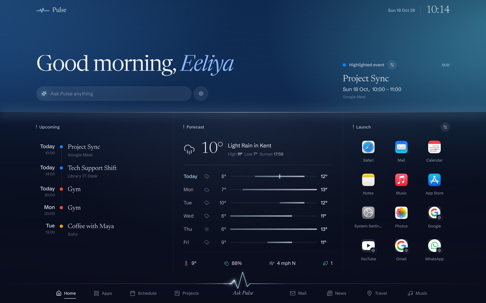
What it does
- 01
The highlighted event
What is on now, or next if nothing is — with the calendar it came from, the room or the link, and the minutes until it starts.
- 02
Upcoming
The next five things across every calendar you have connected, each in its own calendar’s colour, with today’s separated from the rest of the week.
- 03
The forecast
Today in large, then five days as bars you can read at a glance — the high and the low at either end, and the temperature now sitting where it falls between them. Feels-like, humidity, wind and UV underneath.
- 04
Launch
The applications and sites you open most, one tap away, in the order and the folders you put them in.
- 05
Ask Pulse, right there
The box under the greeting takes a typed sentence or a held key, and reaches everything below it.
- 06
Big screens
On a 2560 × 1440 display it scales up to fill the screen rather than sitting small in the middle of it, and nothing at or below 1920 × 1080 moves a pixel.
Gmail · Outlook · Microsoft 365
It reads your mail first.
Connect one mailbox or several, from either service. Not another mail client bolted on the side — a part of your day the rest of Pulse can read. An email that mentions Thursday at half two becomes something in your calendar. One that asks for the Q4 deck by Friday becomes a task with the right date on it. You see both before either happens.
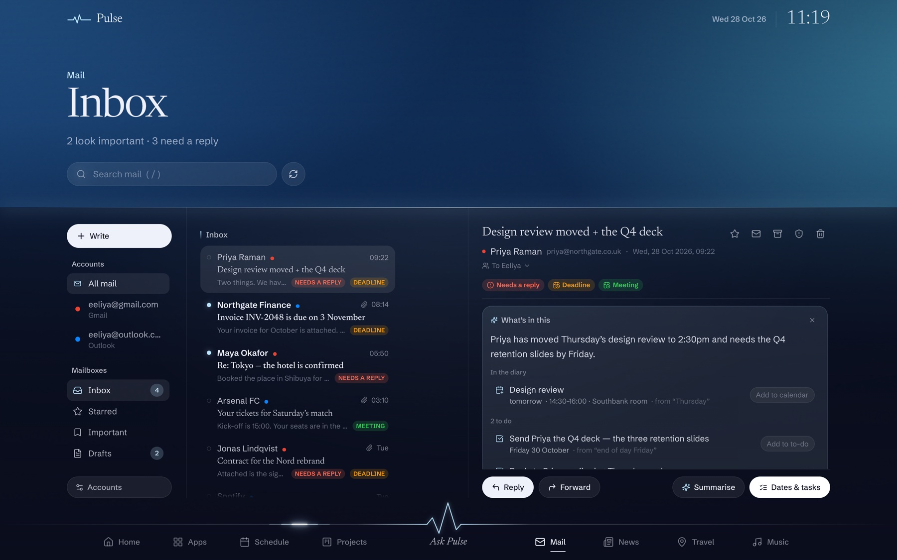
What it does
- 01
Two services, one way of working
Gmail speaks in labels, Outlook in folders. Pulse keeps one idea of a mailbox — inbox, starred, important, drafts, sent, archive, spam, bin — and each service declares what it can actually do. Gmail’s categories appear for a Gmail account and are simply absent for an Outlook one.
- 02
One inbox, two accounts
Connect both and messages interleave by date, each carrying its own account. If one service stops answering it says so, rather than quietly showing you a smaller number.
- 03
Dates & tasks
One press and Pulse reads the whole message once and hands back what is in it: the meetings, the things you have been asked to do, the dates to know about, who is involved, and whether it needs a reply at all. Each row arrives with the button that acts on it.
- 04
Highlight anything
Explain it, summarise it, or turn just that into a task, today’s to-do, an event, a card on a project, or a drafted reply.
- 05
A review card, every time
Anything that would change something opens for you to edit first, with the model’s own uncertainty said out loud. Nothing is written until you press the button on that card.
- 06
Writing
Ask Pulse in the composer’s footer, or ⌘J, opens a panel over the draft. Say what the email should say, or take what is there and make it shorter, friendlier, more professional, or just correct. Where only you can supply something it leaves a gap in square brackets rather than deciding for you.
More of it
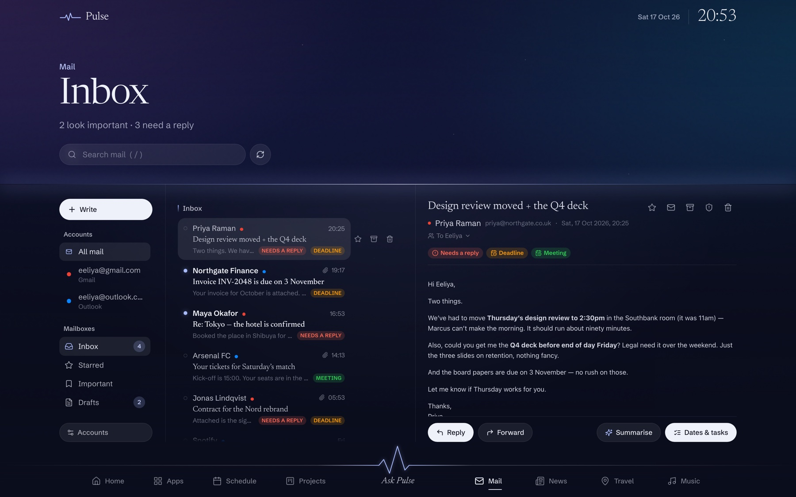
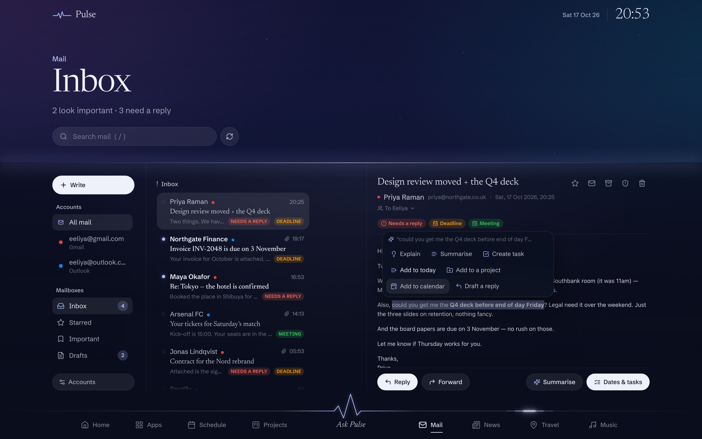
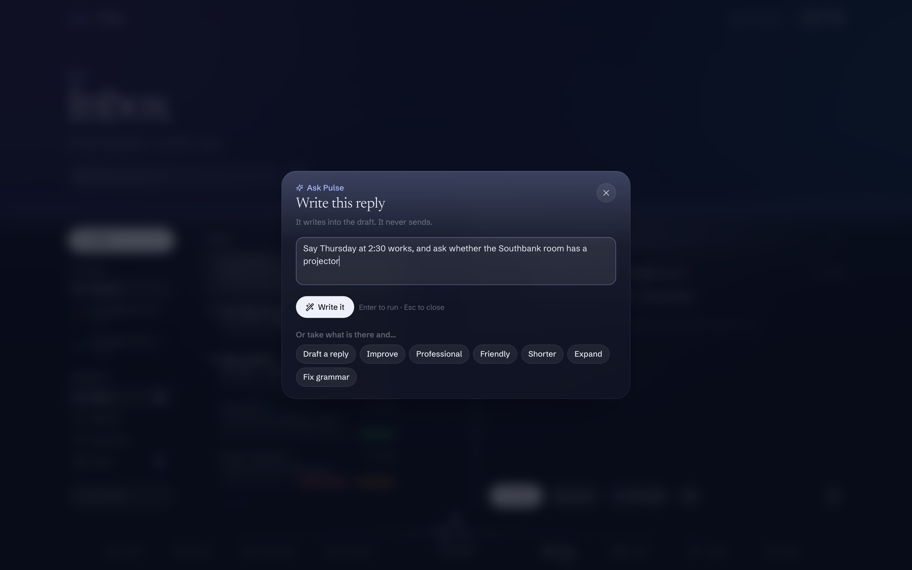
Boards · timeline · table
Boards that move.
One set of cards, drawn three ways, because they answer three different questions. The board is what is in flight. The timeline is when it lands. The table is the whole lot at once.
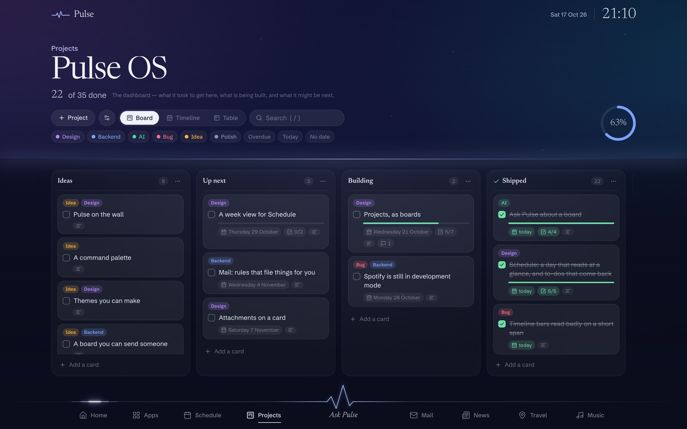
What it does
- 01
Lists you own
Name them, reorder them, delete them — and deleting one moves its cards rather than taking them with it.
- 02
Drag between lists
The last list ticks a card off when it lands there, and dragging it back out un-ticks it.
- 03
A card holds the detail
Labels for the kind of work, a start and a due date, a checklist with its own progress, notes, and a thread of notes to self.
- 04
The timeline
Three months of shipped work as bars, today marked, and the cards with no date counted at the foot rather than quietly left out.
- 05
The table
Every card at once, sortable by any column, with each card’s list and dates editable where they stand.
- 06
It starts full
A new install opens on the Pulse OS board — three months of what shipped, dated as it shipped, what is being built, what is next, and a column of ideas. Projects you kept in the old Life Hub come across as boards of their own.
More of it
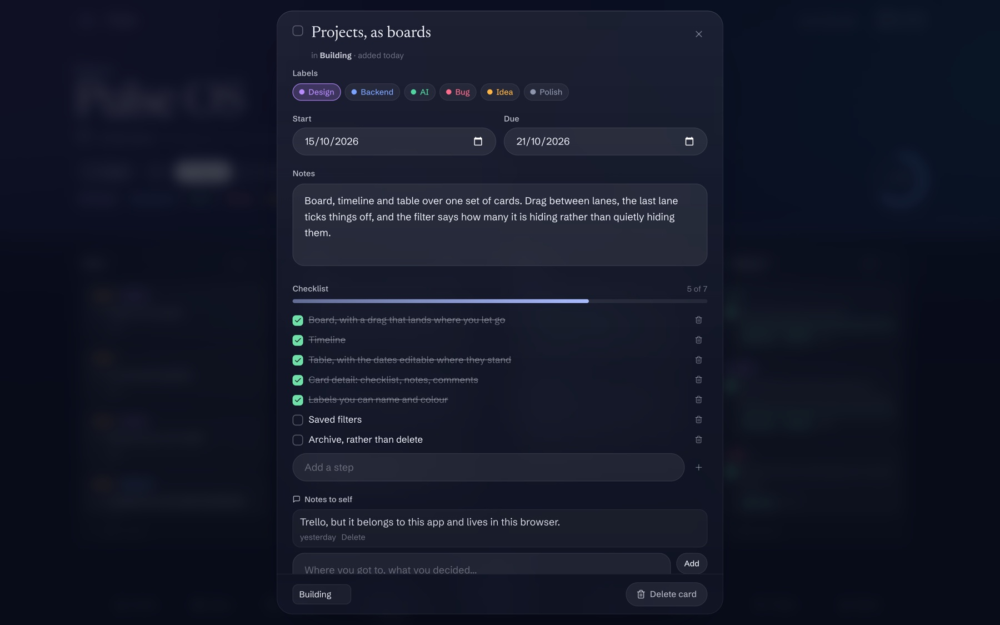
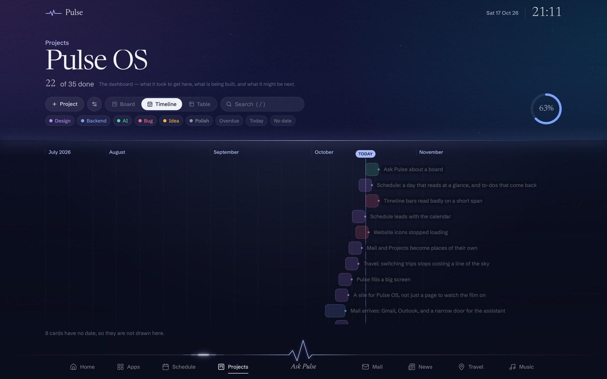
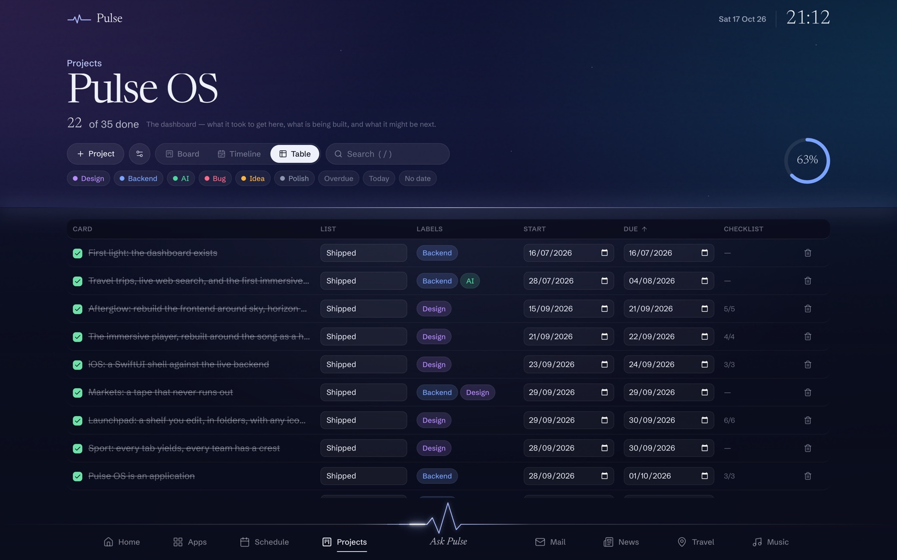
Google · iCloud · Pulse’s own
Both calendars, at last.
The calendar is the screen, not a strip at the side of one. A cell per day fills the height it is given, with events written into the days rather than counted under them.
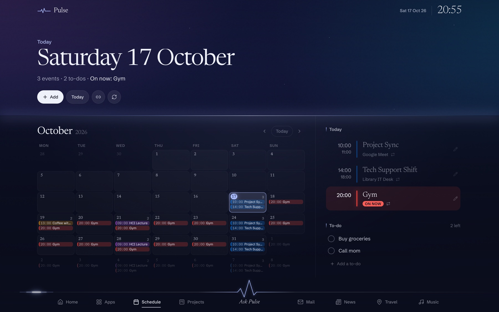
What it does
- 01
The month leads
Up to three events written into a day at any laptop size, and the count beside the date always covering the rest.
- 02
The months either side stay in view
Quieter, their events in a greyer shade of each calendar’s colour, so the first week of next month is there rather than missing.
- 03
The day, beside it
What is over steps back, what is on now is lit in its own calendar’s colour, and the line under the date says it in a sentence — 3 events · 2 to-dos · On now: Gym.
- 04
The keyboard walks it
Arrows by the day, Page Up and Page Down by the month, Home and End to its first and last day, and T back to today.
- 05
Write an event, don’t fill in a form
Type it as a sentence and Pulse takes it apart into a time, a place and a calendar.
- 06
To-dos with a frequency
Once, daily, weekly, monthly or yearly — or until done, which carries a to-do forward day after day until it is ticked, then leaves it on the day it was finished. A repeat is ticked off one day at a time, so Monday’s bins say nothing about next Monday’s. A monthly to-do on the 31st falls on the last day of a shorter month.
The launchpad
Everything you open, where you put it.
A shelf of the things you actually use, which knows what is installed on the machine it is running on.
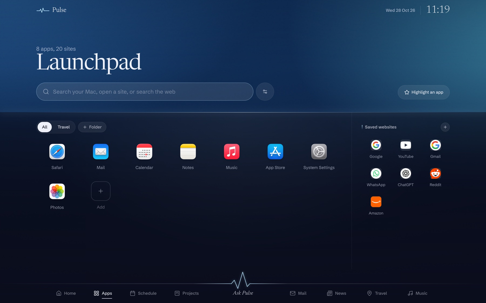
What it does
- 01
It finds your applications
The ones you really have installed, and notices new ones while it is open.
- 02
Web apps count
Anything installed through a browser sits alongside the rest.
- 03
Icons
Every one at a single size with a background of its own, ranked by the size the image really is rather than the size a page claims — and any of them can be replaced,
.icnsincluded. - 04
Folders
Reorder them, and file something into one in a tap.
- 05
Names
Anything can be renamed to whatever you call it.
Typed, or out loud
It doesn’t answer. It does it.
The assistant is not a chat window that tells you where to go and do something yourself. It reads your mail, your calendar, your boards and your to-do list, and it changes them when you ask — typed, or spoken, with voice mode sharing every one of the typed assistant’s tools.
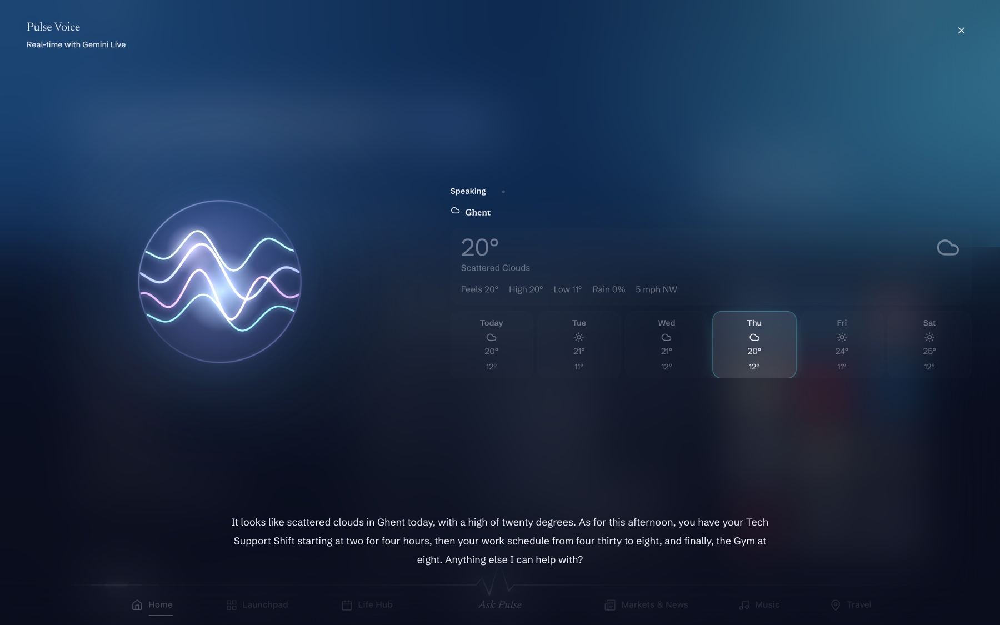
What it does
- 01
It reads a board
Ask what is left on Pulse OS? and it reads what is in each list, when each card is due and what is already late, before it answers.
- 02
It adds and moves cards
A card lands in the first list that is not the finishing one, unless you name another; tell it something is done and it moves the card to the last list, which ticks it off.
- 03
It is careful where it matters
A card already on the board is not added twice, and a name that fits two cards — or two lists — moves nothing. It asks which you meant.
- 04
It cannot delete
Not a card, not an email, not an event. That stays yours to do.
- 05
Out loud
A voice mode on the Gemini Live API, with the same tools as the typed one — so anything you can ask for, you can say.
News · sport · markets
Live, in the corner.
A channel actually running while you read the rest of it, a headline list you can filter by what it is, and a ticker you set yourself.
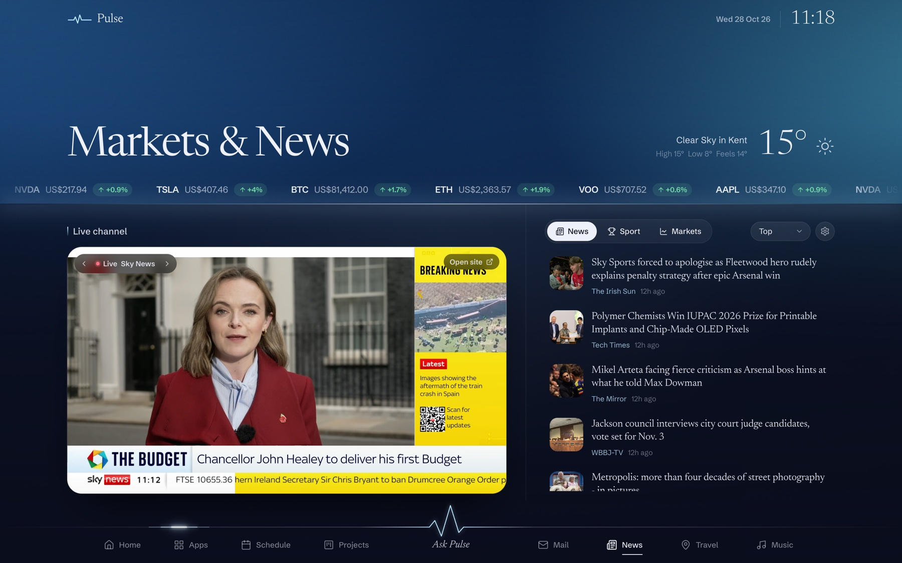
What it does
- 01
A live channel
Playing in the corner, with the story under it, and the whole site one press away.
- 02
Headlines worth the space
Each with its source and how long ago it landed, filtered to news, sport or markets.
- 03
A tape that never runs out
The watchlist is yours to set, its coins work, and it keeps going rather than stopping at the end of a list.
- 04
Sport that looks like sport
Every team carries its own crest, each card takes its colour from the place the match is played, and every tab yields to the others.
- 05
Formula 1
The shape of the circuit, and a result you can read at a glance rather than a table you have to decode.
More of it
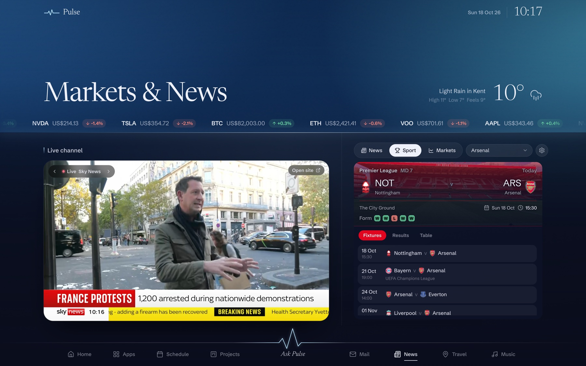
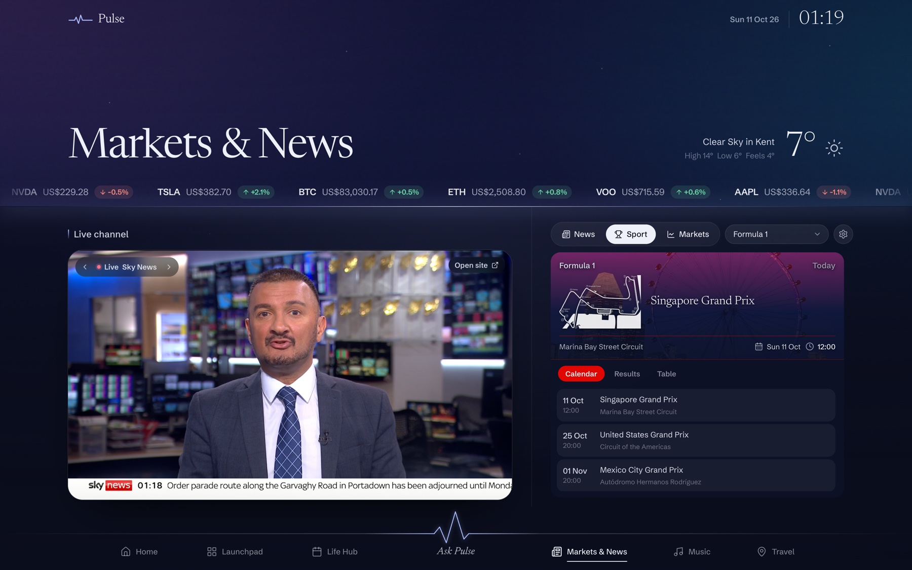
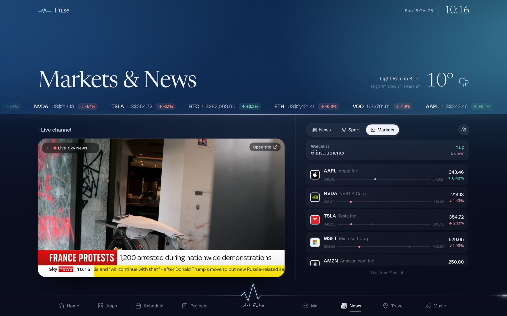
Flights · maps · money
Wherever you’re headed.
A trip is not a folder of bookings. It is where you are going, when the plane is, where you are sleeping, what the money is worth there, and what each day of it looks like on a map.
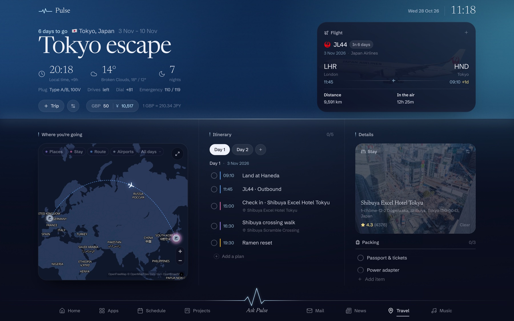
What it does
- 01
The flight, looked up
Type the number and the route comes back: the airports, the distance, the time in the air, the airline’s mark, and one of its aircraft behind the card. The route only — never a live position — so a number that flies every day can’t put someone else’s aeroplane on your trip.
- 02
Where you’re staying
Find a hotel near where you are going and it arrives with its photo, its rating and its address, goes on the map, and lands in the itinerary as the check-in.
- 03
Maps with no key
The route, the hotel and every day of the plan draw on a real map, in the browser and in the packaged desktop app.
- 04
Money
Real exchange rates with a month of history behind them, so you can see which way it has been going.
- 05
The time there
Next to the time here, with the plug, the side of the road, the dialling code and the emergency number beside it.
- 06
More than one trip
A picker in a row that was already there, which does not grow with the number of trips or push the page through the horizon.
Spotify, built in
Lit by whatever’s playing.
Your own Spotify, inside Pulse rather than in another window — and a full screen that takes its colours from the record and puts the words where they belong.
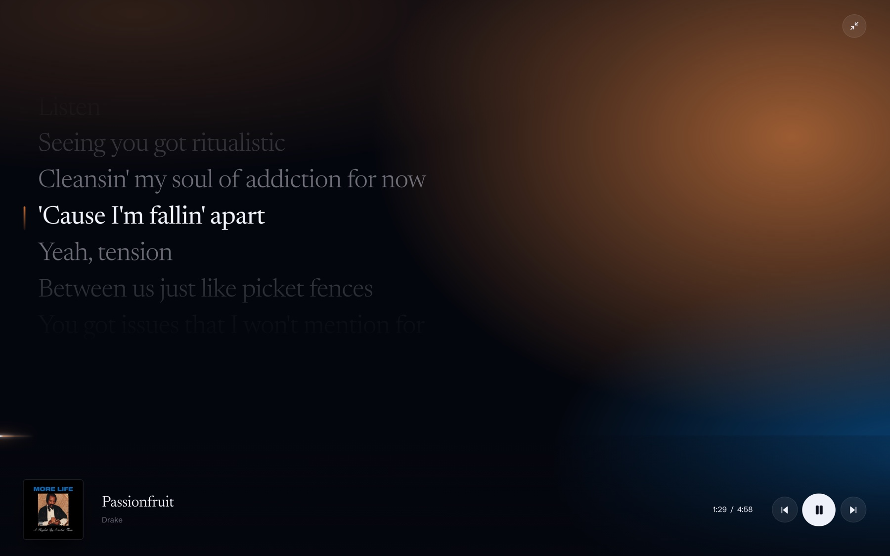
What it does
- 01
The immersive screen
The album’s own colours light the whole view, and the lyrics land on time, line by line.
- 02
Queues that behave
The queue stops repeating a single track, radio can be started from any song, and a playlist shows what is on it through the player queue.
- 03
In the desktop app too
Playback works inside the packaged build, not only in a browser — the Web Playback SDK needed a path through Electron that it did not have.
How it is built
A sky, a horizon, and a ground.
Every view is composed of the same three parts, which is why moving between them feels like moving around one place rather than between nine apps — and a handful of rules about your accounts that nothing in it can break.
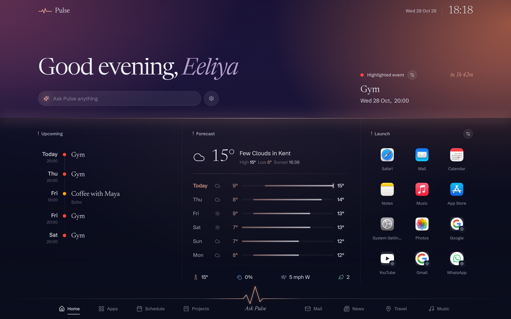
How it is built
- 01
The sky
Holds what the view is about, set large and straight on the light, with no box around it.
- 02
The horizon
Sits at a fixed height, so the line falls in the same place as you move between tabs.
- 03
The ground
Is full-bleed and divided into columns by space and a faint rule, rather than chopped into floating cards. Only real objects — a record sleeve, a video, a map, an app icon — get a tile of their own.
- 04
The light follows the hour
The background is not a picture of a sky, it is the hour itself: dawn, day, dusk and night each light the whole screen differently, crossfading as the day turns. Music lends the screen the colours of whatever record is playing.
- 05
A type system, not a font choice
Newsreader for display and figures, Schibsted Grotesk for everything else, on one scale used everywhere instead of sizes picked per view. Colour carries the hierarchy.
What it will never do
- 01
It never sends
Send is a button, pressed by a person. The assistant can fill the box and has no way to press it.
- 02
It never files anything on its own
Nothing is deleted, archived or moved unless you do it.
- 03
It cannot permanently delete mail
Not by policy, but because the permission is never requested.
- 04
Your password never reaches Pulse
You sign in with Google or Microsoft; only the resulting token is kept, on your own machine, where no page in the browser can read it.
- 05
Message bodies stay off the disk
And are left out of exported backups on purpose.
- 06
The assistant is never handed your mailbox
One message, one thread or one search, each with a hard ceiling — and nothing is read by a model unless you ask. The unread count and the “8 look important” line are worked out by ordinary rules on your machine.
Where it runs
- 01
In a browser
Against a local backend that holds every provider token, so the frontend never sees one.
- 02
As an application
A packaged desktop build for macOS and Windows, wrapping the same frontend and backend.
- 03
On iOS
As a SwiftUI shell running against the same backend.
- 04
From 1280 to 2560 wide
On a big display it scales up to fill the screen; nothing at or below 1920 × 1080 moves.
- 05
Carried between copies
Trips, the launchpad, folders, to-dos, projects and conversations export to a single file and import into another Pulse. Caches are left out: they belong to an account the new copy has not connected.
- 06
Arranged how you like it
The tab bar’s order, and which tabs are put away, are yours in Settings.